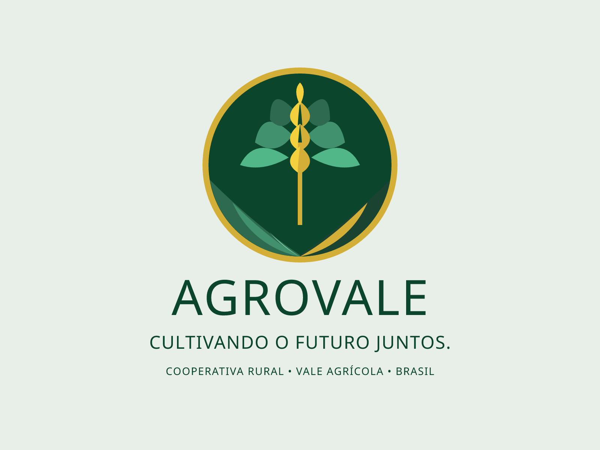

A AgroVale Cooperativa é uma Cooperativa muito relevante no Vale do São Patrício. Por produtores rurais na região de Ceres e Rialma, no Cerrado goiano.
Reunimos mais de 340 cooperados em 18 municípios, com foco na produção de grãos e no fortalecimento da agricultura familiar e empresarial do Vale.
Números da safra 2024/2025:
| Cultura | Área (alqueires) | Produção(Sacas) |
|---|---|---|
| Soja | 1250 | 5000 |
| Milho | 1250 | 4300 |
| Sorgo | 450 | 1000 |
| Girasso | 200 | 800 |